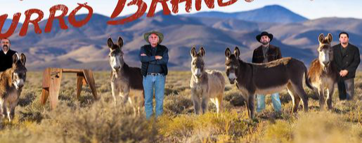
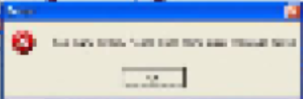

talkin' TOOLS
a good tool has agency of its own
the design process should allow for the tools agency
the shape of a curve is defined by the saw cutting it
and the work only has as much character
as the saw horse it's concieved on

is the computer a tool?
